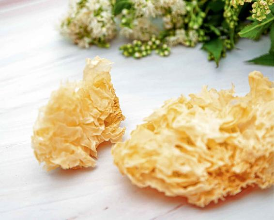

秋分的“分”字是非常有讲究的，古人说是金气秋分，因为秋天是属金的。
金气秋分，一个“分”字有好几重含义，意味着昼夜平分、寒暑交替、阴阳消长、一年农事结束。
一年的养生之旅，到秋分时也要来一个大转弯了。
从春天开始，我们一直以养阳为主，接下来该阴阳双补了，特别是要偏重于滋阴和补血。
在起居方面，早上可以不用起那么早了，天亮再起。
喜欢剧烈运动的朋友们，现在开始要收着点儿了。
秋分时，天上的龙星都“潜伏”了，我们也不妨定下心来，安享秋天丰收的物产，静观秋日的好风光。
秋分，这个“分”字首先意味着昼夜平分——一天分成两半，昼夜时间是相等的，也就是说不像夏天那样白天比较长，夜晚比较短，早上日出的时间也渐渐地推迟了。在秋分之前，我们习惯于每天早起，然后出门去看看日出。从秋分开始，就要稍微调整自己的作息，早上起得要晚一点了。
秋分节气时，如果您每天很早就醒来睡不着，说明夏天没有养好，伤气伤阴了。这个秋冬季要多吃银耳、莲子、墨鱼干、枸杞等滋阴补气的食物给身体补回来。
有些老年朋友早上不太睡得着，习惯于很早起来。我建议您在秋分之后也要适当晚起，最好是看到天有点蒙蒙亮，也就是在日出之前大约半小时，您再起床都不迟。
如果您实在睡不着，现在开始可以多吃一些宁心安神的食物，如莲子，它对调理失眠，特别是老年人的这种心肾不交型的失眠很有帮助。
如果早上醒过来了，但天还没有亮，这时候怎么办呢？您不妨躺在床上做一做养生的按摩运动，比如，可以摩一摩腹、转一转眼，总之不要急于起床。
古人告诫我们，秋冬的时候我们早上什么时间起床合适呢？能够看到太阳的光了，才可以起床，这叫必待日光。
这就是秋分的“分”的第一层含义，它是把昼夜给平分了。从秋分之后，我们的夜晚就“绵绵自此长”，睡眠时间也要比以前增加了。
古人说秋分为“秋向此时分”。秋分把秋天分成了两半，前一半温，后一半凉。秋天的秋燥，在秋分之前是温燥，秋分之后就是凉燥了。
凉燥一般表现在三个方面：皮肤、呼吸道和肠道。而这三样，都是肺在主管。燥邪伤人，肺是首当其冲的。
肺怕燥，一燥就容易产生各种问题——皮肤、鼻子和咽喉干燥，缺乏滋润，病毒就容易长驱直入呼吸道。
润肺防燥，不在于喝水，而是要吃银耳、百合这些清润的食物。每天吃一点，皮肤会比较滋润，嘴唇、鼻腔也不会干燥难受了。
特别是秋天易咳嗽的人，要加强防燥，可以用银耳配百合，既润肺又补肾阴，预防咳嗽和气管炎。
百合偏凉，脾胃虚寒的人，可以再加点桂圆，做成桂圆百合银耳羹，这样还能增强补血养心的功效。
从春分到秋分，我们是以防热为主。从秋分开始到来年的春分，我们是以防寒为主。秋分之后，才能真正感觉到秋天的凉意，以及人体缺乏水液滋润的那种燥。
秋分这个转折点，把一年分成了寒暑两半。所以其他节气的食方通常是吃半个月到一个月，而秋分进补的食物，整个秋冬季都要吃。我建议大家从秋分开始吃的银耳羹，要一直吃到立春，就是这个原因。
秋分把秋天分成了两半，也把一年分成了两半。不仅是“秋向此时分”，也可以说是“年向此时分”。
秋分的“分”，第三个含义就是“分年”。年怎么在此时来分呢？在上古时代，一年是在秋分时结束。
古人所说的岁和年，其实是不一样的。什么叫作年呢？庄稼收获一次就定为一年，这是以农业为中心来定的。秋分一到，就是农作物普遍丰收的时候，到此，一年的农事就圆满结束了，这就是古人认为的一年。因此，在古老的历法中，一年的年底，并不是现在的大年三十，而是秋分。
现在我们把秋分定为“丰收节”，是很有道理的。古人怎么知道秋分到了呢？就是看到龙星“潜渊”了，龙星沉到了地平线下，“潜龙勿用”，那这就是一年的结束。
这对我们现在人来说，还有没有意义呢？
在我看来，它仍然非常有意义。对应到我们的身体，就是到这个时候也应该是丰收的季节。经过了春生夏长，到我们收获的时候了。
如果我们在春天、夏天的时候养生养得好，那现在我们应该感觉到身体气血充盈，很舒服。此时就可以把人体的精气、气血往回收，把它们收藏起来，来充实我们的内在，这就是我们人体的丰收。
秋分对于古人来说是一年农事的结束，而对于现代人来说，就是一年身体的生长季节的结束，我们要开始收藏了，让人体的精气就像天上的龙星“潜渊”一样深藏体内不外泄，以待来春。
